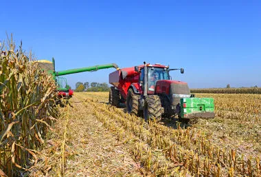

Um projeto no campo que fala sobre a produção.
A produção no campo abastece a cidade com alimentos e matérias-primas, e a cidade oferece mercado, tecnologias e serviços para o campo, criando uma relação de troca e desenvolvimento.
Campo:
Cidade:
1. Como é a produção?
2. Como a cidade se conecta com a produção no campo?